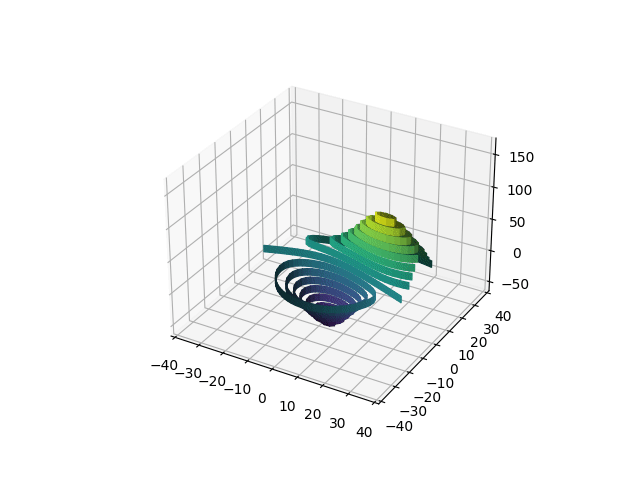

Discretización de Sistemas Dinámicos Continuos y Teorema de Liouville
Introduccion
Se nos pide realizar transformaciones en 2d y 3d
Ya sea
\begin{equation*} A = \begin{pmatrix} a_{0,0} && a _{0,1} \\ a_{1,0} && a_{1,1} \end{pmatrix} v = \begin{pmatrix} v_0 \\ v_1 \\ \end{pmatrix} \end{equation*}o
\begin{equation*} B = \begin{pmatrix} b_{0,0} && b _{0,1} && b_{0,2}\\ b_{1,0} && b_{1,1} && b_{1,2} \\ b_{2,0} && b_{2,1} && b_{2,2} \end{pmatrix} w = \begin{pmatrix} w_0 \\ w_1 \\ w_2 \end{pmatrix} \end{equation*}nuestras matrices que definan respectivamente la transformación y la translación en las dimensiones correspondientes usaremos el plano afín para unificar todas las operaciones como aplicación de matriz
\begin{equation*} T_{A} = \begin{pmatrix} a_{0,0} && a _{0,1} && 0\\ a_{1,0} && a_{1,1} && 0 \\ 0 && 0 && 1 \end{pmatrix} T_{v} = \begin{pmatrix} 1 && 0 && v_0 \\ 0 && 1 && v_1 \\ 0 && 0 && 1 \\ \end{pmatrix} \end{equation*} \begin{equation*} T_{B} = \begin{pmatrix} b_{0,0} && b _{0,1} && b_{0,2} && 0\\ b_{1,0} && b_{1,1} && b_{1,2} && 0 \\ b_{2,0} && b_{2,1} && b_{2,2} && 0 \\ 0 && 0 && 0 && 1 \\ \end{pmatrix} T_{w} = \begin{pmatrix} 1 && 0 && 0 && 0 && w_0 \\ 0 && 1 && 0 && 0 && w_1 \\ 0 && 0 && 1 && 0 && w_2 \\ 0 && 0 && 0 && 0 && 1 \end{pmatrix} \end{equation*}Material Usado
PyTorch
Para acelerar las transformaciones lineales hemos decidido usar la libreria PyTorch en lugar de Numpy
Matplotlib
Se usa matplotlib por homogeneidad con respecto a otros trabajos, pero ralentiza considerablemente todo el proceso de extracción de datos, tanto que el tiempo de computo de nuestro programa es básicamente la espera al actualizar los plots.
TQDM
Libreria que nos facilita una barra de progreso
Scikit-Image
Para abrir la imagen en python como un array.
Resultados
Apartado 1
Se generó la animación sin problemas y se facilita en el archivo adjunto. 
Apartado 2
El centroide se situa en el punto \((206, 175)\).
La animación se facilita en el archivo adjunto.

Conclusión
La creación de animaciones utilizando el paquete matplotlib es cuanto menos críptica, no solo por que las funciones para actualizar los ejes son inconsistentes en cada uno de los plots posibles, si no que al mismo tiempo, los resultados de la práctica nos hacen pensar que su uso no es recomendable.
Por alguna razón en el apartado 1 la animación en la que hemos borrado completamente los ejes y vuelto a crearlos se genera considerablemente más rapido que en la que únicamente los actualizamos.
Un dato a tener en cuenta en ambas animaciones es que las imagenes tienen el cero de coordenadas en la esquina superior izquierda, mientras que en la representación habitual este se situa en la esquina inferior izquierda. Este dato hace que nuestras representaciones esten realmene invertidas respecto a como se verían las imagenes en su formato .png
Apéndice de Código
Python Script
Main
import math import sys import time import tqdm import torch import affinetransformations as atf import matplotlib.pyplot as plt from mpl_toolkits.mplot3d import axes3d import matplotlib.animation as ani from matplotlib import colormaps from skimage import io, data def apartado1(): nframes = 100 fig = plt.figure() ax = plt.axes(projection='3d') x, y, z = axes3d.get_test_data(0.05) shape = torch.tensor(x).shape cmap = colormaps.get_cmap('viridis') p = ax.contour(x, y, z, 16, cmap=cmap) grid = torch.row_stack((torch.tensor(x).flatten(), torch.tensor(y).flatten(), torch.tensor(z).flatten())) affine_grid = torch.row_stack((grid, torch.ones((1,len(grid[0]))))) axis = 0 diameter = torch.max(torch.cdist(grid[:].permute(1,0), grid[:].permute(1,0), p=2)) translation_vector = torch.tensor([ 0, 0, diameter]).reshape(-1,1) ax.set_xlim(-40, 40) ax.set_ylim(-40, 40) ax.set_zlim(-100, 100) anim_created = ani.FuncAnimation(fig, atf.AnimationFunction3D, fargs=(ax, p, affine_grid, translation_vector, axis, shape, cmap, diameter), frames=(tqdm.tqdm(torch.linspace(0, 3* math.pi, nframes)))) #plt.savefig('apartado1.png') anim_created.save('apartado1.gif') def apartado2(image_file, output_file, nframes): img = io.imread(image_file) grid, colors = atf.generate_pixel_coordinate_tensor(img) angle = 3 * math.pi centroid = torch.tensor([torch.mean(grid[i,:][colors[:,2] < 240], dtype=torch.float) for i in (0,1)]).reshape(-1,1) print(f"El centroide está en {centroid}") diameter = torch.max(torch.cdist(grid[:, colors[:,2] < 240].permute(1,0), grid[:, colors[:,2] < 240].permute(1,0), p=2)) translation_vector = torch.tensor([ diameter, diameter]).reshape(-1,1) affine_grid = torch.row_stack((grid, torch.ones((1,len(grid[0]))))) fig = plt.figure() figure = plt.scatter(grid[1], grid[0], c=colors/255.0) plt.xlim(0, 2.2*diameter) plt.ylim(0, 2.2*diameter) anim_created = ani.FuncAnimation(fig, atf.AnimationFunction2D, fargs=(figure, affine_grid, translation_vector), frames=(tqdm.tqdm(torch.linspace(0, 3* math.pi, nframes)))) anim_created.save(output_file) if __name__=="__main__": apartado1() apartado2('arbol.png', 'apartado2.gif', 100)
Transformaciones
import math import torch import numpy as np def generate_pixel_coordinate_tensor(image): #since we try to mak this function general, but the return of io.imread can be very different #we have to adress all possible cases. The first one being that is a greyscale. #Here we have made the requisite for the image to be more than 4 pixels wide in its last dimension. if image.shape[-1] > 4: dims = image.shape ncolors = 1 elif image.shape[-1] == 4: dims = image.shape[:-1] ncolors = 4 elif image.shape[-1] == 3: dims = image.shape[:-1] ncolors = 3 else: raise Exception('Wrong image format') if len(dims) == 2: output_grid = np.mgrid[0:dims[0], 0:dims[1]].reshape((2, -1)) else: output_grid = np.mgrid[0:dims[0], 0:dims[1], 0:dims[2]].reshape((3, -1)) output_colors = np.reshape(image, (-1, ncolors)) return torch.tensor(output_grid, dtype=torch.float), torch.tensor(output_colors) def affine_rotation_tensor_2d(theta): rot_matrix = torch.zeros((2,2), dtype=torch.float) rot_matrix[0, 0] = math.cos(theta) rot_matrix[0, 1] = - math.sin(theta) rot_matrix[1, 0] = math.sin(theta) rot_matrix[1, 1] = math.cos(theta) output = torch.row_stack((torch.column_stack((rot_matrix, torch.tensor([0,0]))), torch.tensor([0,0,1]))) return output def affine_rotation_given_center_2d(vector, angle): rot_matrix = torch.zeros((2,2), dtype=torch.float) rot_matrix[0, 0] = math.cos(angle) rot_matrix[0, 1] = - math.sin(angle) rot_matrix[1, 0] = math.sin(angle) rot_matrix[1, 1] = math.cos(angle) affine_portion = torch.tensor([vector[0]*(1-math.cos(angle)) + vector[1]*math.sin(angle), vector[1]*(1-math.cos(angle)) - vector[0]*math.sin(angle)]) output = torch.row_stack((torch.column_stack((rot_matrix, affine_portion)), torch.tensor([0,0,1]))) return output def affine_translation_tensor_2d(vector): output = torch.row_stack((torch.column_stack((torch.eye(2), vector)), torch.tensor([0,0,1]))) return output def affine_rotation_tensor_3d(theta, axis): rot_matrix = torch.zeros((3,3), dtype=torch.float) if axis == 0: #X Axis rot_matrix[0,0] = 1 rot_matrix[1,1] = math.cos(theta) rot_matrix[1,2] = - math.sin(theta) rot_matrix[2,1] = math.sin(theta) rot_matrix[2,2] = math.cos(theta) elif axis == 1: #Y Axisn rot_matrix[1,1] = 1 rot_matrix[0,0] = math.cos(theta) rot_matrix[0,2] = math.sin(theta) rot_matrix[2,0] = - math.sin(theta) rot_matrix[2,2] = math.cos(theta) else: #Z Axis rot_matrix[2,2] = 1 rot_matrix[0,0] = math.cos(theta) rot_matrix[0,1] = -math.sin(theta) rot_matrix[1,0] = math.sin(theta) rot_matrix[1,1] = math.cos(theta) output = torch.row_stack((torch.column_stack((rot_matrix, torch.tensor([0, 0, 0]))), torch.tensor([0, 0, 0, 1]))) return output def affine_rotation_given_center_3d(vector, angle, axis): rot_matrix = torch.zeros((3,3), dtype=torch.float) if axis == 0: #X Axis rot_matrix[0,0] = 1 rot_matrix[1,1] = math.cos(angle) rot_matrix[1,2] = - math.sin(angle) rot_matrix[2,1] = math.sin(angle) rot_matrix[2,2] = math.cos(angle) affine_portion = torch.tensor([0, vector[0]*(1-math.cos(angle)) + vector[1]*math.sin(angle), vector[1]*(1-math.cos(angle)) - vector[0]*math.sin(angle)]) elif axis == 1: #Y Axisn rot_matrix[1,1] = 1 rot_matrix[0,0] = math.cos(angle) rot_matrix[0,2] = math.sin(angle) rot_matrix[2,0] = - math.sin(angle) rot_matrix[2,2] = math.cos(angle) affine_portion = torch.tensor([vector[0]*(1-math.cos(angle)) + vector[1]*math.sin(angle), 0, vector[1]*(1-math.cos(angle)) - vector[0]*math.sin(angle)]) else: #Z Axis rot_matrix[2,2] = 1 rot_matrix[0,0] = math.cos(angle) rot_matrix[0,1] = -math.sin(angle) rot_matrix[1,0] = math.sin(angle) rot_matrix[1,1] = math.cos(angle) affine_portion = torch.tensor([vector[0]*(1-math.cos(angle)) + vector[1]*math.sin(angle), vector[1]*(1-math.cos(angle)) - vector[0]*math.sin(angle), 0]) output = torch.row_stack((torch.column_stack((rot_matrix, affine_portion)), torch.tensor([0, 0, 0, 1]))) return output def affine_translation_tensor_3d(vector): output = torch.row_stack((torch.column_stack((torch.eye(3), vector)), torch.tensor([0, 0, 0, 1]))) return output def AnimationFunction2D(frame, figure, input_grid, translation_vector): output_grid = affine_rotation_given_center_2d(translation_vector, frame) @ input_grid figure.set_offsets(output_grid[:-1,:].permute(1,0)) def AnimationFunction3D(frame, ax, p, input_grid, translation_vector, axis, shape, cmap, diameter): output_grid = (affine_rotation_given_center_3d(translation_vector, frame, axis) @ input_grid) ax.clear() ax.set_xlim(-30, 30) ax.set_ylim(-30, 30) ax.set_zlim(-60, 80) ax.contour(output_grid[0].reshape(shape), output_grid[1].reshape(shape), output_grid[2].reshape(shape), 16, extend3d=True,cmap=cmap) return p